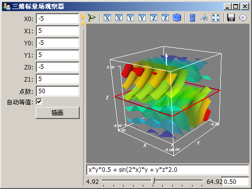

相关文档： 将Mayavi嵌入到界面中
# -*- coding: utf-8 -*-
import numpy as np
from numpy import *
from enthought.traits.api import *
from enthought.traits.ui.api import *
from enthought.tvtk.pyface.scene_editor import SceneEditor
from enthought.mayavi.tools.mlab_scene_model import MlabSceneModel
from enthought.mayavi.core.ui.mayavi_scene import MayaviScene
class FieldViewer(HasTraits):
"""三维标量场观察器"""
# 三个轴的取值范围
x0, x1 = Float(-5), Float(5)
y0, y1 = Float(-5), Float(5)
z0, z1 = Float(-5), Float(5)
points = Int(50) # 分割点数
autocontour = Bool(True) # 是否自动计算等值面
v0, v1 = Float(0.0), Float(1.0) # 等值面的取值范围
contour = Range("v0", "v1", 0.5) # 等值面的值
function = Str("x*x*0.5 + y*y + z*z*2.0") # 标量场函数
plotbutton = Button(u"描画")
scene = Instance(MlabSceneModel, ()) # mayavi场景
view = View(
HSplit(
VGroup(
"x0","x1","y0","y1","z0","z1",
Item('points', label=u"点数"),
Item('autocontour', label=u"自动等值"),
Item('plotbutton', show_label=False),
),
VGroup(
Item(name='scene',
editor=SceneEditor(scene_class=MayaviScene), # 设置mayavi的编辑器
resizable=True,
height=300,
width=350
), 'function',
Item('contour',
editor=RangeEditor(format="%1.2f",
low_name="v0", high_name="v1")
), show_labels=False
)
),
width = 500, resizable=True, title=u"三维标量场观察器"
)
def _plotbutton_fired(self):
self.plot()
def _autocontour_changed(self):
"自动计算等值平面的设置改变事件响应"
if hasattr(self, "g"):
self.g.contour.auto_contours = self.autocontour
if not self.autocontour:
self._contour_changed()
def _contour_changed(self):
"等值平面的值改变事件响应"
if hasattr(self, "g"):
if not self.g.contour.auto_contours:
self.g.contour.contours = [self.contour]
def plot(self):
"绘制场景"
# 产生三维网格
x, y, z = mgrid[
self.x0:self.x1:1j*self.points,
self.y0:self.y1:1j*self.points,
self.z0:self.z1:1j*self.points]
scalars = eval(self.function) # 根据函数计算标量场的值
self.scene.mlab.clf() # 清空当前场景
# 绘制等值平面
g = self.scene.mlab.contour3d(x, y, z, scalars, contours=8, transparent=True)
g.contour.auto_contours = self.autocontour
self.scene.mlab.axes() # 添加坐标轴
# 添加一个X-Y的切面
s = self.scene.mlab.pipeline.scalar_cut_plane(g)
cutpoint = (self.x0+self.x1)/2, (self.y0+self.y1)/2, (self.z0+self.z1)/2
s.implicit_plane.normal = (0,0,1) # x cut
s.implicit_plane.origin = cutpoint
self.g = g
self.scalars = scalars
# 计算标量场的值的范围
self.v0 = np.min(scalars)
self.v1 = np.max(scalars)
app = FieldViewer()
app.configure_traits()